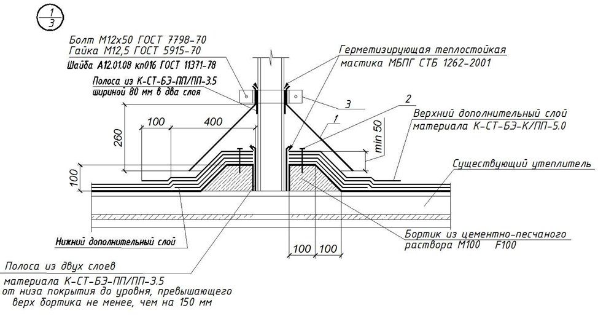

Согласование с архитектурой и конструкциями

Критичность координации инженерных разделов
Более 90% переделок при строительстве объектов возникают не вследствие расчетных ошибок, а из-за конфликтов между разделами проектирования.
Ваша задача как инженера ОВ – выявлять и устранять конфликты на этапе проектирования, когда это дешевле и проще.
Типичные проблемы несогласованности разделов:
- Архитектурный проект предусматривает чистую высоту потолка 2.7 м, в то время как вентиляционные магистрали требуют 3.2 м.
- Конструктивные решения предусматривают несущие элементы в местах прохождения трубопроводов отопления.
- Кабельные линии электроснабжения проложены в едином лотке с воздухозаборами систем вентиляции.
Задача инженера ОВ (вентиляции и кондиционирования) состоит в том, чтобы выявить все потенциальные конфликты на этапе проектирования, когда устранение противоречий требует минимальных затрат (корректировка чертежей), а не на этапе строительства (конструктивные переделки).
Начальный этап согласования (Концептуальный проект)
Это критически важный период, требующий собрания всех заинтересованных сторон до начала детального проектирования.
Организация проектного совещания (П-1)
Смоделируем типичную ситуацию согласования на совещании.
Обязательные участники:
- Главный архитектор проекта.
- Начальник конструктивного раздела.
- Инженер ОВ (главный специалист раздела).
- Инженер электроснабжения и внутридомовых сетей.
- Инженер водоснабжения и водоотведения.
- Представитель Заказчика (Инвестор).
- При необходимости: Специалист по пожарной безопасности, менеджер проекта.
Форма проведения: предпочтительно личное совещание с видеоконференцией через программное обеспечение BIM-координации (Autodesk BIM 360, Sharepoint) с одновременным просмотром моделей Revit или AutoCAD.
Основные вопросы для обсуждения
- Определение чистых высот помещений и пространства для инженерных систем
- Согласно СП 54.13330.2016 (Здания жилые многоквартирные), минимальная высота от пола до потолка в:
- жилых комнатах: 2.7 м.
- коридорах: 2.1 м.
- Инженер ОВ определяет: "Требуется ли дополнительное пространство для воздуховодов сечением 630×630 мм?"
- Вариант решения: предусмотреть навесной потолок высотой 2.8 м или разместить магистральные воздуховоды в техническом этаже между этажами.
- Согласно СП 54.13330.2016 (Здания жилые многоквартирные), минимальная высота от пола до потолка в:
- Согласование маршрутов прохождения инженерных сетей через конструктивные элементы
- Архитектор предоставляет план с обозначенными местами для отверстий в стенах и перекрытиях.
- Инженер ОВ определяет точные координаты отверстий для воздухозабора (ВЗ), воздуховыброса (ВВ) и дымоудаления.
- Согласно нормам (СП 60.13330.2020), воздухозабор должен располагаться на высоте не менее 2 м.
- Конструктор определяет способ закрепления закладных деталей в опалубке перекрытий.
- Определение маршрутов основных трасс систем
- Вертикальные стояки: Размещение в шахтах, технических каналах.
- Горизонтальные разводки: под подвесным потолком, в полу с теплоизоляцией или в стене.
- Каждый инженерный раздел наносит свои маршруты на план, используя цветовую кодировку.
Протокол технических решений (Формальный документ)
По итогам совещания составляется официальный Протокол технических решений, который подписывается всеми участниками и становится нормативным документом для дальнейшего проектирования:
Пример протокола координационного совещания
Протокол координационного совещания от 20.01.2026
Участники:
- А.А. Сидоров (Архитектура)
- И.В. Петров (Конструктив)
- О.М. Кулаков (ОВ)
- Е.П. Волков (Электроснабжение)
- В.Н. Кравцов (ВК)
Принятые решения:
1. ОВ: Воздухозабор размещен на кровле здания, координаты
(X=45.2 м, Y=32.5 м, Z=28.7 м), диаметр воздуховода 630 мм.
2. ОВ: Вертикальные магистральные воздуховоды диаметром 630 мм
размещены в технической зоне позади опорной конструкции В-5, этажи 1-9.
3. КР: Отверстия в перекрытиях и стенах согласованы с конструктором.
Заключение: Конфликты между разделами отсутствуют.
Этап эскизного проекта – детальная проверка коллизий
На этом этапе инженерные решения детализируются с использованием трехмерного моделирования.
Применение технологии трехмерного моделирования и проверки коллизий
Методология:
- Архитектор выгружает модель (ARK_Main.rvt).
- Конструктор добавляет несущие элементы (KR_Main.rvt).
- Инженер ОВ создаёт модель систем (OV_Main.rvt).
- Все модели сводятся в Navisworks.
- Настраивается и запускается проверка на коллизии.
Результаты: на экране отображаются красные кубики (коллизии) с координатами в трехмерном пространстве.
Типовые коллизии и алгоритмы их разрешения
| № | Вид коллизии | Конструктивная причина | Рекомендуемое решение |
| 1 | Воздуховод диаметром 630 мм пересекает несущую балку | Неточная расчетная траектория маршрута | Изменение высоты воздуховода или сдвиг маршрута на 1.5 м в горизонтальной плоскости с согласованием конструктора |
| 2 | Трубопровод горячего водоснабжения (ГВС) проходит через опору лифта | Ошибка при наложении слоев моделей | Перекладка трубопровода по альтернативному маршруту через смежное помещение (коридор) с сохранением наклонов для слива |
Принцип иерархии при разрешении конфликтов
На практике в строительном проектировании принята следующая иерархия приоритетов:
- Архитектура – пространственная и эстетическая целостность проекта (неприкосновенна в предоставлении общественных и жилых пространств).
- Конструктив – несущие конструкции и обеспечение прочности (почти неизменяемо без расчета).
- Инженерные системы (ОВ, ВК, ЭОМ, СС) – адаптируются к заданному пространству в пределах норм проектирования.
Исключение: если инженер ОВ обоснованно доказывает, что изменение параметров системы нарушит требования СП 60.13330.2020 (например, уменьшение диаметра воздуховода приведет к превышению допустимой скорости потока и образованию шума свыше 40 дБ), он может требовать пересмотра архитектурных решений с документальным обоснованием.
Этап рабочего проекта – полная детализация узлов
На рабочей стадии проектирования создаются детальные чертежи узлов сопряжения инженерных систем с конструктивными элементами.
Создание узловых (деталировочных) чертежей
Стандартный узел: Проход воздуховода через кровельное перекрытие (масштаб 1:10 или 1:5).

Содержание чертежа:
- меометрические размеры
- материалы (сталь, изоляция)
- слои конструкции (гидроизоляция, теплоизоляция, крепежные элементы).
- крепежные элементы
- ссылки на соответствующие нормативные документы.
- поле согласований: Подписи представителей архитектуры, ОВ и конструктива.
Процедура письменного согласования с примечанием разделов
После подготовки узловых чертежей инженер ОВ направляет письменное уведомление смежным специалистам:
Пример уведомления о согласовании
Уважаемые коллеги!
Направляем на согласование документ:
- Лист ОВ-10 «Узел прохода воздуховода через кровельное перекрытие»
- Лист ОВ-12 «Схема крепления закладной детали»
Просим дать письменное согласование или замечания
не позднее 20.02.2026 по электронной почте.
Контакт: инженер.ов@компания.рф
С уважением,
Главный специалист ОВ
Данное письмо служит юридическим документом, подтверждающим, что смежные разделы ознакомлены с решениями и не имеют возражений. При возникновении конфликтов на этапе строительства это письмо защищает проектировщика от претензий.
Реестр согласованных чертежей (Управление версиями)
Ведется формальный Реестр согласованных чертежей и документов:
| Лист | Название | Версия | Согласовано архитектурой | Согласовано конструктором | Согласовано ЭОМ | Дата полного согласования |
| ОВ-10 | Узел кровля | V2 | ✓ 14.11.25 | ✓ 15.11.25 | ✓ 15.11.25 | 15.11.25 |
| ОВ-12 | Крепеж закладной | V1 | ✓ 13.11.25 | ✓ 14.11.25 | - | 14.11.25 |
| ОВ-15 | Тепловой узел | V3 | ✓ 16.11.25 | ✓ 17.11.25 | Замечания | - |
Методология общения и принципы дипломатического разрешения конфликтов:
1. Задавайте вопросы, а не утверждайте
- «Здесь должна быть шахта»
- «Возможно ли здесь разместить шахту 630×630 мм?»
2. Предлагайте решения
- «Воздухозабор не проходит»
- «Если сдвинуть воздухозабор на 1,5 м, система будет работоспособна. Вот эскиз».
3. Все документируйте
Каждое изменение заносите в протокол. Это защита на случай претензий.
Пример разрешения конфликта
Исходная ситуация:
- Конструктивный раздел добавил пилон, которого ранее не было в модели прямо в месте предполагаемого прохождения магистрального воздуховода диаметром 630 мм.
Шаг 1: выявление коллизии
В программе Navisworks обнаружена красная коллизия пересечения воздуховода с пилоном.
Шаг 2: проанализировали: пилон несёт нагрузку, двигать нельзя.
Шаг 3: Поиск альтернативных решений
Варианты:
- А) Обойти по стене.
- Б) Разделить на два воздуховода Ø450 мм.
Шаг 4: согласовали с заинтересованными сторонами. Все специалисты, у которых в данном месте есть системы или элементы проверяют, не затрагивает ли их эти варианты решения.
Шаг 5: Зафиксировали в протоколе, все важные моменты.
Инструменты и процедуры управления проектом
Электронный документооборот и облачные сервисы
Современное управление согласованием инженерных систем требует использования специализированного программного обеспечения:
- Autodesk BIM 360 (Construction Cloud): Облачное хранилище всех версий Revit-моделей с возможностью вложения комментариев непосредственно в 3D-среду.
- Sharepoint (Microsoft 365): Централизованное размещение чертежей, протоколов и писем с версионированием.
- Autodesk Navisworks: Интеграция многодисциплинарных моделей и автоматическая проверка коллизий
- Sarex - отечественное ПО, комплексное решение, которое включает среду общих данных, планирование строительства объекта и цифровой мониторинг объекта в реальном времени.
Преимущества облачного хранилища:
- Всегда актуальная версия документов (исключены работы с устаревшими чертежами).
- История всех изменений с указанием автора и даты.
- Возможность удаленной работы команды проектировщиков из разных городов.
Еженедельные координационные совещания (Standing Meetings)
На объектах, особенно крупных или технически сложных проводятся еженедельные Техсовещания в формате видеоконференций (Microsoft Teams, Zoom):
Регламент:
- Вторник, 14:00 (единое время для всех разделов).
- Длительность: 45 минут.
- Участники: Главные специалисты каждого раздела + менеджер проекта (BIM-координатор).
Повестка совещания:
- Отчеты по разделам: Каждый инженер докладывает о проделанной работе, выявленных проблемах (5 минут).
- Выявленные конфликты: BIM-координатор показывает результаты в Navisworks (10 минут).
- Обсуждение вариантов разрешения: Группа совместно ищет решение конфликтов (20 минут).
- Постановка задач на следующую неделю: Определяются ответственные и сроки (10 минут).
Результат: Ведется Журнал учета открытых вопросов со статусом каждого вопроса.
Матрица рисков и потенциальных конфликтов
Заранее, на этапе концепции, составляется документ Реестр технических рисков:
| Риск | Вероятность | Влияние | Ответственный | План действий |
Недостаточная высота подвала | 70% | Высокое | Архитектор | Поднять пол или перенести котельную |
Коллизия воздуховода с балкой | 60% | Критическое | Инженер ОВ | Сдвинуть трассу |
Шум > 40 дБ | 40% | Высокое | Инженер ОВ | Увеличить сечение или установить шумоглушитель |